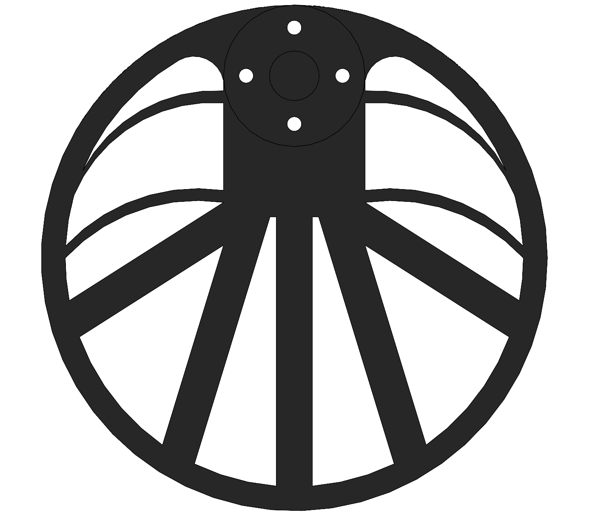
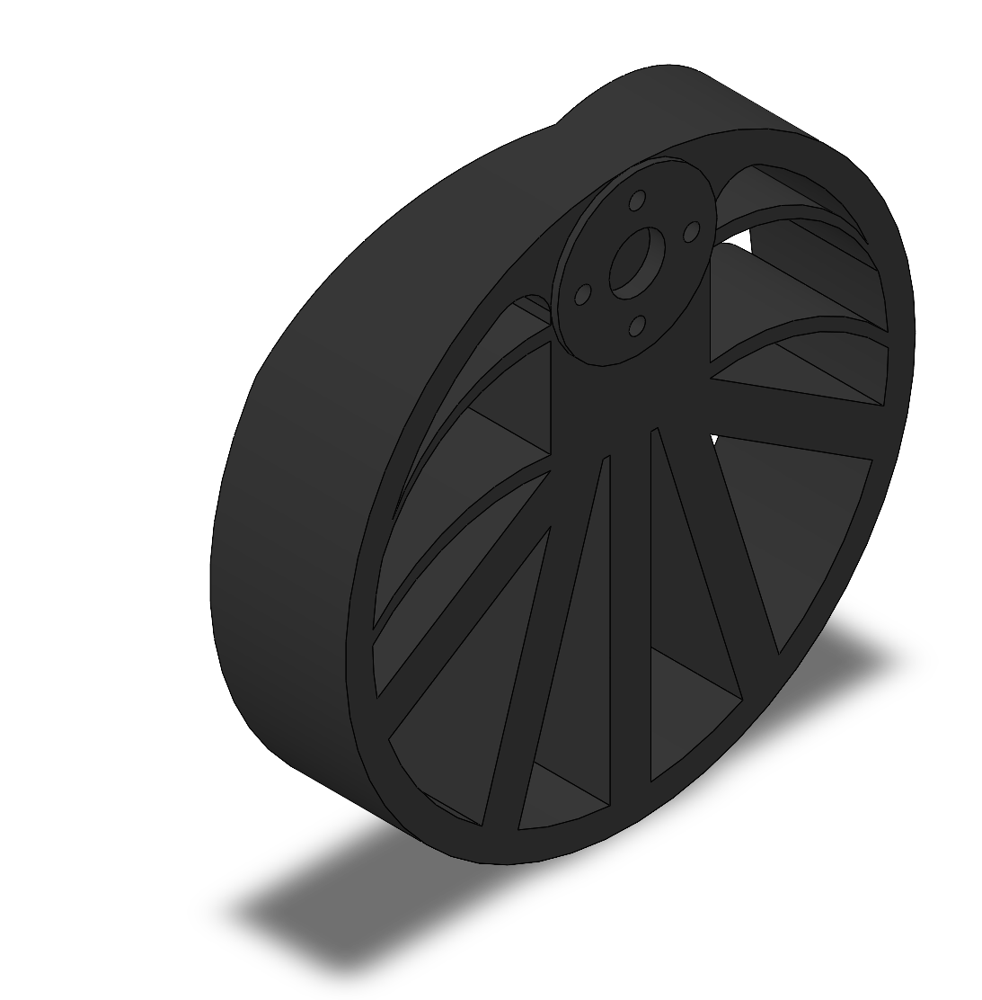
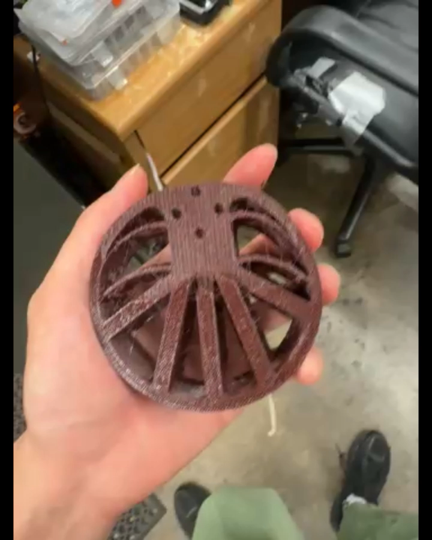
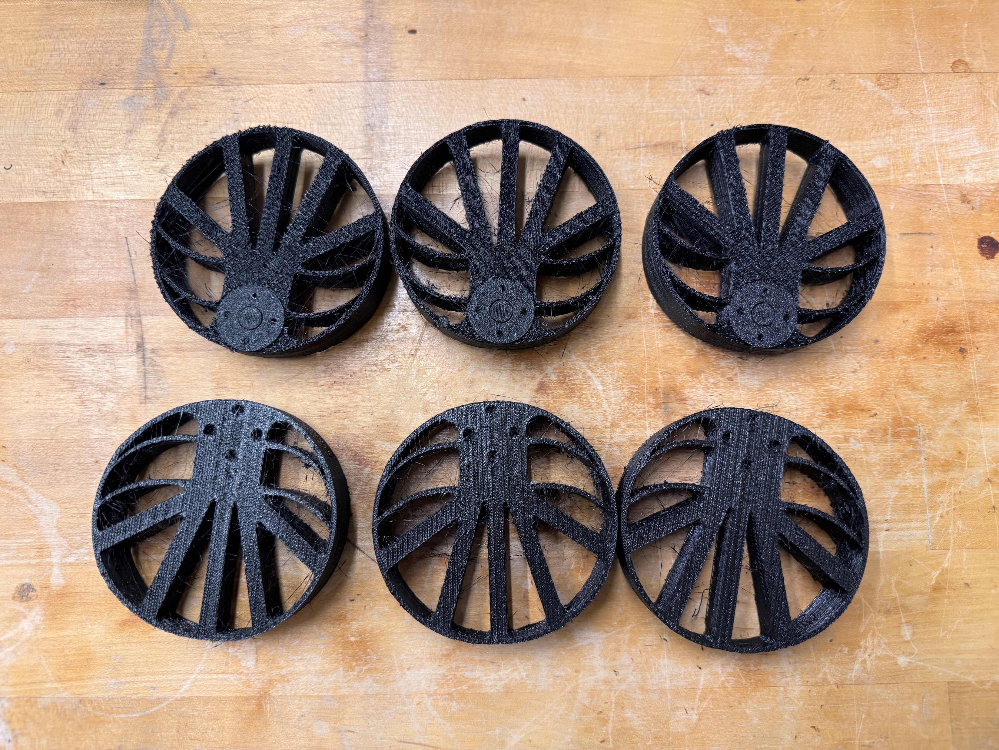
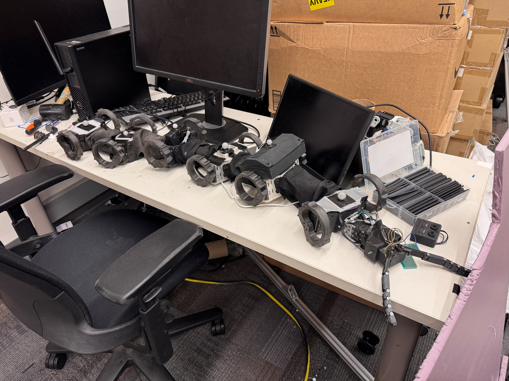

- Compliant mechanism design
- TPU & PLA 3D printing
- CAD modeling
- Mechanical testing & iteration
- Robot integration (Raspberry Pi)
I lead this redesign alongside Jianfeng Lin in the CRAB Lab.
SCUTTLE, our lab's multi-segmented robot, moves by combining body undulation with rigid, C-shaped leg rotation. That works well on flat ground, but on rough terrain the rigid legs become a bottleneck: a tall obstacle can stall a leg mid-rotation, and a side impact makes it slip instead of clearing the obstacle, so the robot keeps actuating without making forward progress.
I'm leading the redesign of SCUTTLE's leg into a variable-stiffness compliant leg. The bottom 90° stance region keeps four rigid spokes for normal ground contact, while the side regions use thin, curved spokes that buckle elastically when they hit an obstacle, letting the leg deform around it instead of stalling or slipping. I'm building the compliant spokes out of TPU (thermoplastic polyurethane).


Next, I'm characterizing how spoke stiffness depends on three geometric parameters (spoke thickness, spiral curvature radius, and spoke width), and deciding between a single-material TPU print or a multi-material design with rigid PLA stance spokes and TPU compliant spokes.
First Iteration
My first printed prototype let me test the spoke geometry and flex behavior by hand before putting it on the robot.

Current Progress
I printed six legs for baseline testing, but the lab's SCUTTLE robot wasn't available, so my next step is learning to run it through its Raspberry Pi controller, which will also set me up for testing beyond this project.

